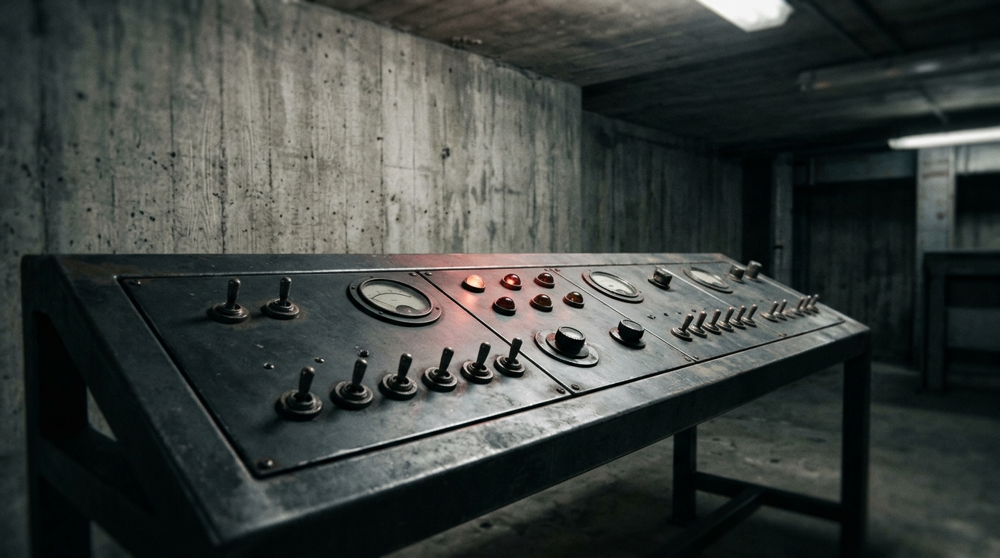

По умолчанию сервер стартует в режиме RP. Администратор может выключить все
модули командой fultmode off и вернуть их обратно командой fultmode rp
без перезагрузки процесса. Почти каждый модуль наследует BaseModule<Config>
из API/EngineCompat.
FULT‑ENGINE
Модульный серверный движок для SCP: Secret Laboratory. Шестьдесят пять модулей для ролей,
SCP-объектов, протоколов комплекса, ранений и администрирования собраны в один файл
Fust-MODULE.dll.
игровых модулей в одной библиотеке. Без разрозненных сборок и конфликтов версий.
- Сборка
- Fust-MODULE.dll
- Защита
- ConfuserEx2
- Исходники
- 384 файла C#
Один движок вместо десятков плагинов
При старте сервера класс FultEngine в LoaderModule сканирует сборку,
находит все модули с интерфейсом IFultEngineModule, раскладывает их YAML-конфиги
и запускает нужный состав под выбранный режим игры.
Subclass и RoleDistribution распределяют роли по квотам, выдают
снаряжение, описания и имена учёных (включая добавленных в v2.0 Доктора Ивана Золо,
Доктора Астольфо и Доктора Феликса). Отряды МОГ Ню-7, Ро-9, Повстанцы Хаоса и Длань Змея
вызываются через отдельные модули и заявки КИР (cra list).
Внутри комплекса работают диспетчерская (WarheadCode, DispatchHack),
протокол 106-N (KillZone), взлом интеркома и дверей, турели ТЗС,
наблюдение через камеры (CameraWatch) и BetterCassie с английской
озвучкой и русскими субтитрами по команде cas.
InjurySystem считает кровотечение и переломы по частям тела с учётом обвесов.
Игроки пользуются КПК с мессенджером (cpc help), рацией с каналами, переноской
и обыском тел, а Theme задаёт единую палитру подсказок из Theme.yml.
Перед выкладкой Release-сборка проходит через _Obfuscation/FultEngine.crproj:
включены запутывание потока управления, шифрование констант, ref proxy и anti-tamper.
Переименование символов отключено, чтобы корректно работали конфиги YamlDotNet,
команды и Harmony-патчи.
Реестр модулей
Полный перечень из 65 модулей сборки v2.0. Нажмите на любую строку, чтобы увидеть путь к конфигу и скопировать команду.
Топология кодовой базы
Реальный граф зависимостей FULT-ENGINE, собранный через graphify: 384 файла кода, 9 345 узлов, 21 529 связей и 449 тематических сообществ.

Веб-панель администрации
В каталоге _WebPanel/ лежит отдельное веб-приложение на Node.js
(Express, EJS, better-sqlite3) с авторизацией через Steam (passport-steam).
В панели ведутся карточки админов, роли и варны.
Список ролей подтягивается напрямую из config_remoteadmin.txt или приходит по HTTP
от плагина на сервере. Ручная синхронизация конфигов не требуется.
Запуск _WebPanel локально
cd _WebPanel
npm install
cp .env.example .env
npm run init-db
npm startУстановка на сервер
-
01
Скачайте готовую сборку
Возьмите обфусцированный файл
Fust-MODULE.dllиз релизаv2.0и скопируйте его вLabAPI/plugins/global/. -
02
Проверьте зависимости
На сервере должны стоять LabAPI
1.1.4,ProjectMER,HintServiceMeow,AudioPlayerApiиHarmony. -
03
Запустите сервер
При первом старте плагин создаст
LabAPI/configs/global/FULT-ENGINE/, разложит конфиги всех модулей вModuleConfig/и подготовит папкиAudio,SSBindsиSecurity.
Релиз и GitHub Packages
Текущая стабильная версия v2.0 собрана на базе коммита f02ae45 под
.NET Framework 4.8.1 и доступна как прямой файл в релизах и как NuGet-пакет.
Установка через NuGet (GitHub Packages)
dotnet add package FultEngine --version 2.0.0 \
--source https://nuget.pkg.github.com/pufikewsd/index.json